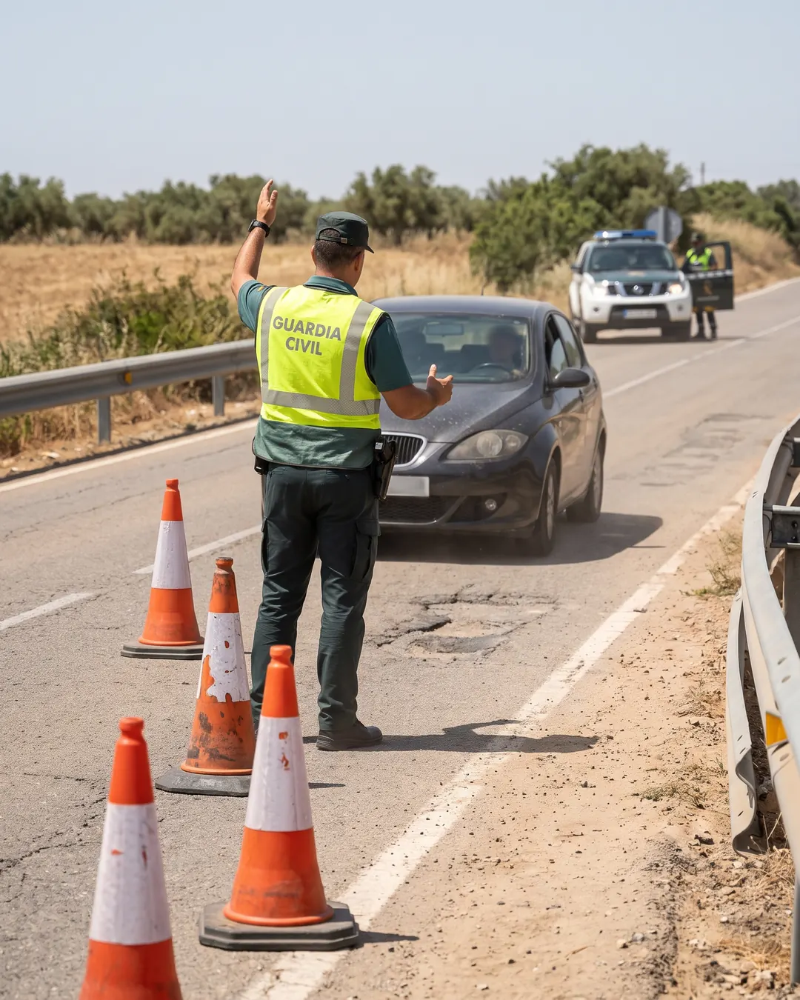

Case #18 · Police
About this case
Case #18 is closed. It was the daily case for November 18, 2026 and its theme was Police. The detectives of that day had two challenges: five images to judge as real photographs or AI-made pictures, and five one-sentence claims to judge as facts or fakes.
- AI-generated images: 2 of 5
- Fake claims: 1 of 5
Below you will find every answer. Each AI-generated image comes with the prompt that produced it, and each claim with the truth behind it and the details worth remembering, so you can check what you missed.
One of the fakes: “South Korea installed projectors that create fake radars to curb speeding.” The truth: South Korea's projectors in Seoul parks show life-size 3D police holograms; its fake speed cameras are just empty boxes.
Want to sharpen your eye? Read our guide to spotting AI images or our guide to spotting fake news, then play today's case.
Images
-
Image 1
REAL
Real photograph
-
Image 2
REAL
Real photograph
-
Image 3
REAL
Real photograph
-
Image 4

AI
The suspect's confession
A police checkpoint on a secondary road in daylight, with an officer in a reflective vest signaling a car to stop and orange cones on the ground; harsh midday light and dust in the air.
-
Image 5
AI
The suspect's confession
Police tape blocking a street at night, with an officer standing in the background talking to a neighbor and diffuse blue lights illuminating the facades; focus on the tape and illegible text on the tape.
Fact or Fake
-
Claim 1
FAKE “South Korea installed projectors that create fake radars to curb speeding.”
South Korea's projectors in Seoul parks show life-size 3D police holograms; its fake speed cameras are just empty boxes.
- The holograms patrol virtually to deter crime.
- The fake speed cameras are empty metal boxes, with no projection.
-
Claim 2
FACT “Dubai police use luxury cars that exceed 400 km/h (249 mph).”
Dubai Police hold a Guinness record for the fastest patrol car: a Bugatti Veyron that tops 407 km/h (253 mph).
- Their fleet also includes Ferrari, Lamborghini and Aston Martin cars.
- The supercars are used mostly for public relations in tourist areas.
-
Claim 3
FACT “The smallest police station in the UK is a booth built inside a lamppost.”
In Trafalgar Square, London, a hollowed-out lamppost became a one-officer police station in 1926.
- It let an officer discreetly watch the square's frequent protests.
- It had a direct phone line to Scotland Yard.
-
Claim 4
FACT “There are “police” bees trained to detect synthetic chemicals.”
Scientists, including those at Los Alamos National Laboratory, have trained honeybees to detect explosives.
- They learn to link the smell to sugar water and extend their tongue.
- The tests included explosives such as TNT and C4.
-
Claim 5
FACT “On an island in Brazil, police patrol on water buffalo instead of cars.”
On Marajó Island, at the mouth of the Amazon, the Military Police patrol on giant water buffalo.
- The buffalo move well through flooded land, swamps and mangroves.
- There they work better than motor vehicles.